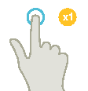
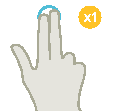
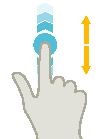
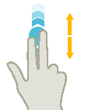
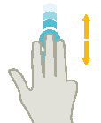
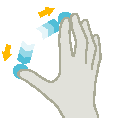
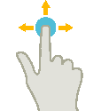
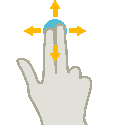

Fingergesten für Multitouch-Bedienung
|  | | Antippen (Tap) |
| | |
|  | | Antippen mit 2 Fingern (Tap) |
| | | |
|  | | Vertikal Wischen mit 1 Finger (Flick) Scrollen in Listen (z. B. Programme, Werkzeuge, Nullpunkte) Scrollen in Dateien (z. B. NC-Programm)
|
| | | |
|  | | Vertikal Wischen mit 2 Fingern (Flick) |
| | | |
|  | | Vertikal Wischen mit 3 Fingern (Flick) |
| | | |
 | | Horizontales Wischen mit 1 Finger (Flick) |
| | | |
|  | | Vergrößern (Spread) |
| | | |
 | | Verkleinern (Pinch) |
| | | |
|  | | Verschieben mit 1 Finger (Pan) |
| | | |
|  | | Verschieben mit 2 Fingern (Pan) |
| | | |
| | | Antippen und halten (Tap and Hold) |
| | | |
| | | Antippen und halten mit 2 Fingern (Tap and Hold) |
| | | |
 | | Antippen mit 2 Zeigefingern (Tap) |
| Hinweis |
Wischgesten mit mehreren FingernDie Gesten funktionieren nur zuverlässig, wenn Sie die Finger weit genug auseinander halten. Der Abstand soll mindestens 1 cm betragen. |